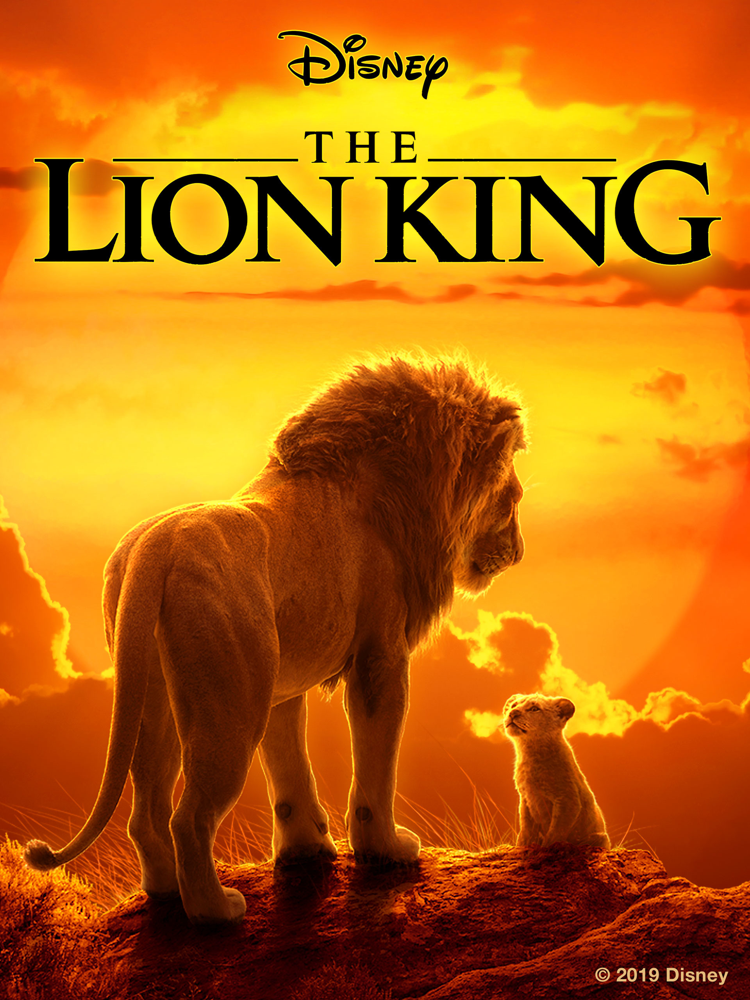

MUSIC
THE LION KING

- The relationship between Circle of Life
and The Lion King - The introduction of the song Circle of Life
"Circle of Life" is the opening song of Disney's 1994 animated film The Lion King. It sets the tone for the entire movie by introducing the characters and the natural world of the African savannah. The song is performed by Carmen Twillie and Lebo M. and features a powerful chorus that emphasizes the cyclical nature of life and death.
The song begins with a haunting Zulu chant sung by Lebo M., which establishes the African setting of the film. The lyrics then introduce the young lion cub Simba, who is held up by Rafiki for all the animals to see. The song continues with a powerful chorus that celebrates the circle of life, emphasizing the importance of family, tradition, and the interconnectedness of all living things.